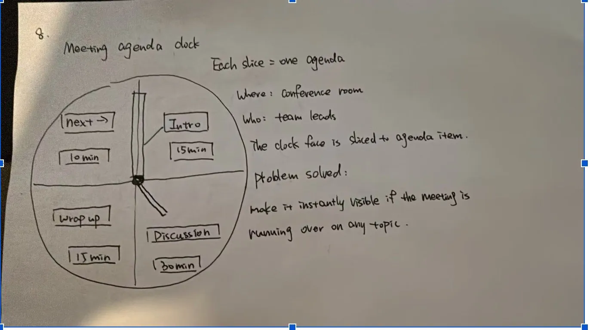
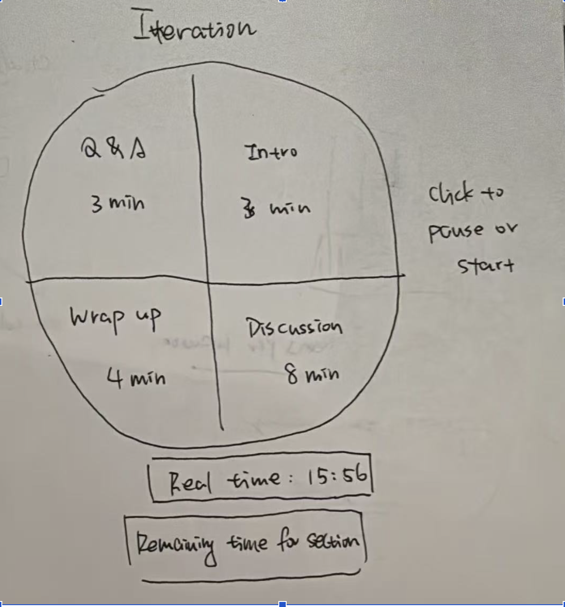

Final Clock 1 — Meeting Agenda Clock
Sketch iteration documentation (paper/hand-drawn photos)


Design process: The Meeting Agenda Clock began as a simple pie chart divided by agenda sections. In an early version, all slices were the same neutral grey — a classmate gave feedback that it was impossible to tell which section was active at a glance. This led to the first key decision: categorical color encoding, assigning each meeting phase (Intro, Discussion, Wrap-up, Q&A) a distinct hue for preattentive identification, meaning users recognize the active section within 200ms without conscious counting. The second iteration added a real-time countdown with a used/remaining shadow split: the dark region grows as time elapses, leveraging the area-ratio perceptual channel, which research shows is effective for proportion judgments. A peer reviewer noted that the shadow effect was too subtle at first — I increased the contrast to fill(60, 60, 60, 230) so the consumed portion is immediately obvious even in peripheral vision. Finally, I added click-to-start interaction and hover highlights, applying the principle of direct manipulation: users act on the visual object itself rather than a separate control, reducing cognitive load in a live meeting context.
Self-reflection / future work: First, I would add audio cues or a subtle flash when a section's time runs out, since the current "TIME UP" text is easy to miss if the user is not looking at the screen. Second, I would allow users to customize the number and duration of agenda sections, making the clock adaptable to different meeting formats beyond the fixed 4-section layout.